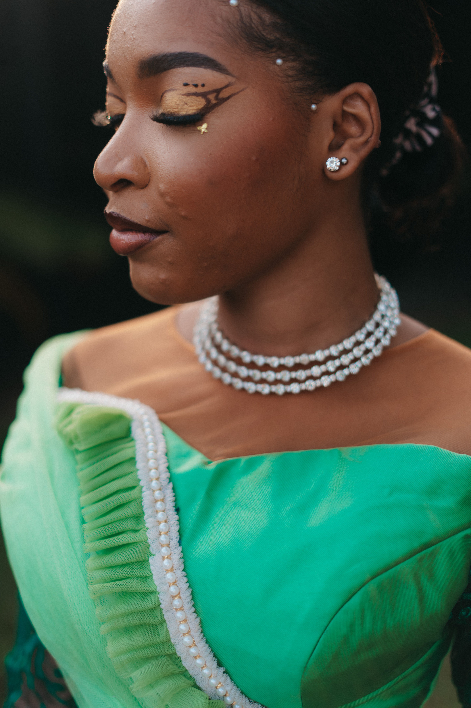
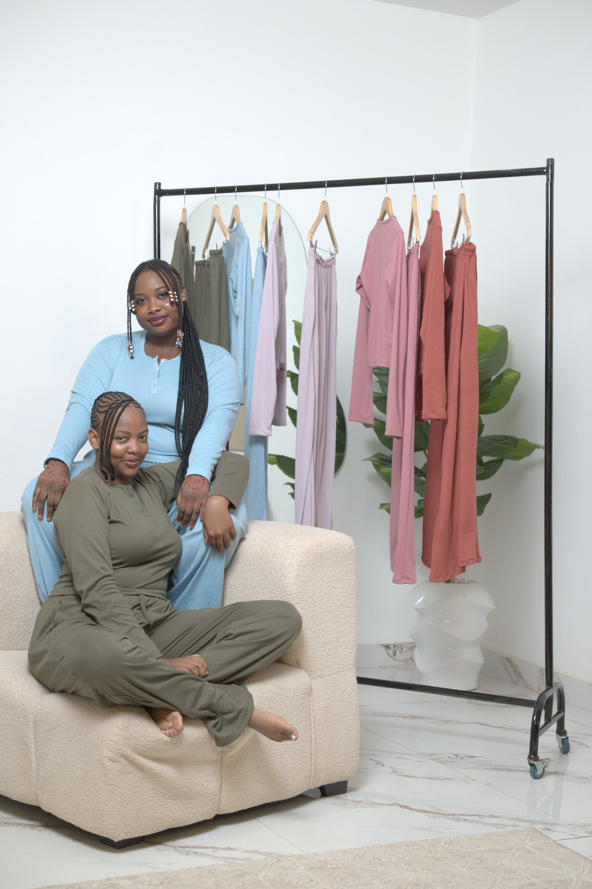

STYLEATLAS
Lagos fashion moves quickly, but the strongest work still begins with patient craft.
Discover verified designers, brands, schools, studios, jobs, events and editorial stories connected to Lagos.
Featured in Lagos
Studios and specialists with strong local relevance.
